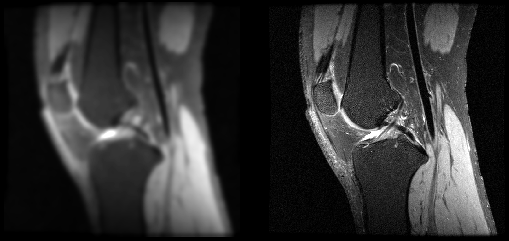

MRI Image Enhancement under Simulated Acquisition Degradation
An end-to-end MRI enhancement pipeline that uses a 2D U-Net to restore knee MRI images degraded by simulated fast acquisition. It includes DICOM preprocessing, case-level data splits, and quantitative evaluation with PSNR, SSIM, and MAE.